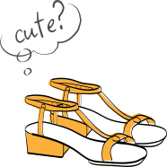
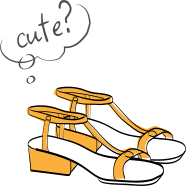

デザインを考える上でのコンセプト

自己紹介＆デザインの仕事に就いた経緯

これまでの経験で培ったスキルのご紹介
どの服を着る？どのリップを塗る？
そんなふうにデザインを
ファッションのコーディネートをどう組むか？メイクをどう施すか？によっ
て、人の魅力をよりよく見せることができますよね？
その人の良さは実は“ここ”で、それを引き出すにはスッキリしたシルエットのシャツに配色はモノトーンにして、リップをメインにしたメイクをすればいいのでは？こんな風にデザインをどうコーディネートして、いかにメイクすれば、商品の魅力を引き出すことができるか？を常に考えて制作することを私のモットーにしています。


 

原 知夏
生年月日/1988年７月28日 年齢/36歳
趣味/バラエティーショップなどでのコスメ探索。
関西学院大学文化歴史学科卒業。
幼少期から絵を描くことが好きで、社会人2年目頃(当時は事務職)にアートスクールに通い、イラストやデザインを学びました。それをきっかけに(会社の人事異動のタイミングがよかったこともあり)販促課部門に異動。グラフィックデザインやデザインディレクションなどを担当しました。実務を詰みながらIllustratorやPhotoshopの勉強のためにWinスクールに通い、スキル磨きに努めました。